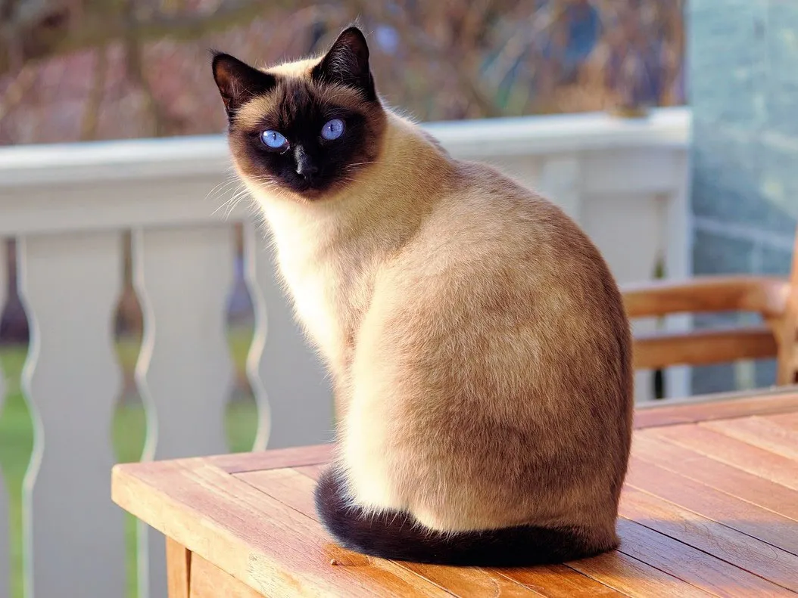

Spotlight: Siamese & Maine Coon
Siamese

The Siamese is known for its vocal personality and striking blue eyes.
Maine Coon

The Maine Coon is one of the largest domestic cat breeds and is very friendly.

The Siamese is known for its vocal personality and striking blue eyes.
The Maine Coon is one of the largest domestic cat breeds and is very friendly.